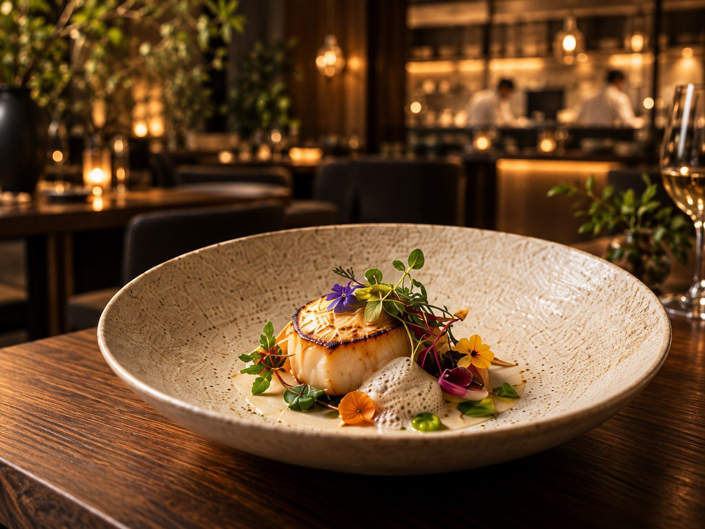
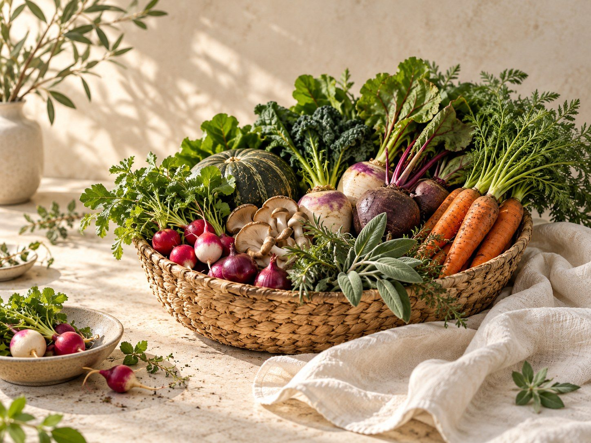
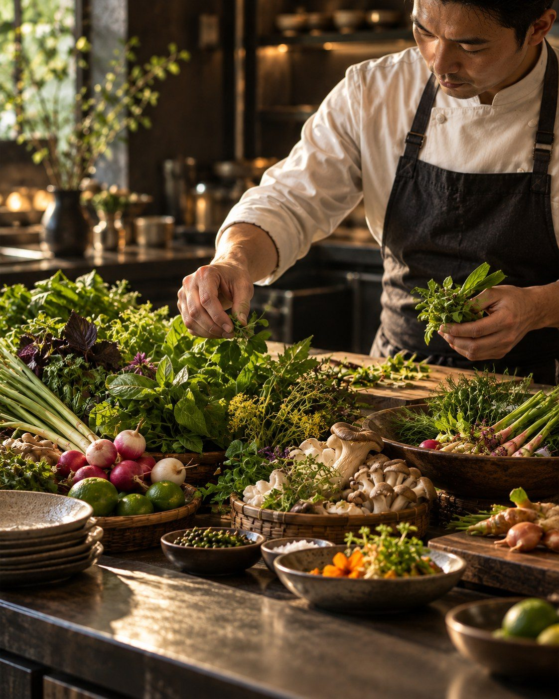
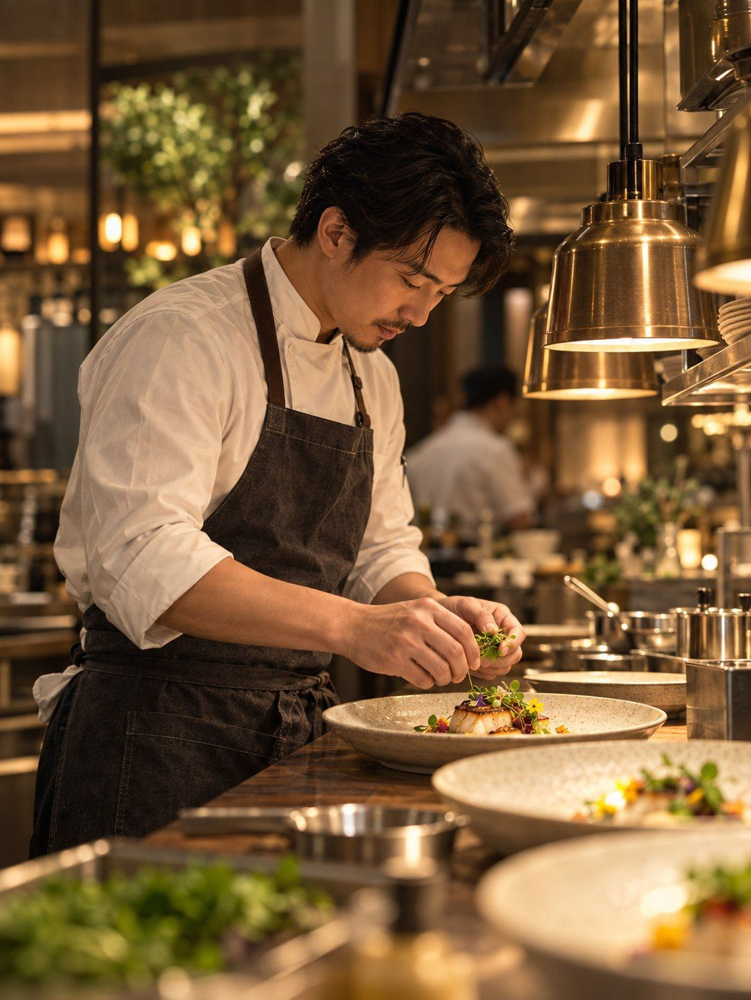

MỘC TABLE — Ẩm thực đương đại
Mỹ vị nguyên bản chạm đến tầng sâu giác quan
Một hành trình fine dining tôn trọng mùa vụ, nguyên liệu Việt và kỹ thuật bếp hiện đại. Mỗi món được tiết chế để hương vị nguyên bản trở thành trung tâm của trải nghiệm.

Khám phá không gian thưởng vị
Không gian được tổ chức theo tinh thần culinary minimalism với vật liệu mộc, ánh sáng ấm và khoảng thở vừa đủ để món ăn cùng cuộc trò chuyện giữ vai trò chính.
Chọn chỗ ngồi phù hợp




Từ mùa vụ đến bàn ăn
Một hành trình vị giác bắt đầu từ nguyên liệu
MỘC TABLE xây dựng thực đơn từ mùa vụ thay vì cố định món quanh năm. Quy trình tuyển chọn, thử vị và hoàn thiện kỹ thuật giúp từng nguyên liệu giữ được cá tính tự nhiên.
Xem thực đơn mùa nàyTuyển chọn theo mùa
Rau, củ, thảo mộc, hải sản và thịt được chọn ở thời điểm có hương vị và kết cấu phù hợp nhất.
Xây dựng cấu trúc vị
Từng món được cân chỉnh độ chua, béo, mặn, ngọt và kết cấu để tạo nhịp tăng dần trong toàn bộ tasting menu.
Hoàn thiện tại bếp mở
Món được hoàn thiện sát thời điểm phục vụ nhằm giữ đúng nhiệt độ, độ tươi và cấu trúc khi đến bàn.

Triết lý bếp
Nguyên liệu tốt không cần che giấu.
Kỹ thuật tốt giúp hương vị tự lên tiếng. Tinh thần của MỘC TABLE nằm ở sự tiết chế: ít thành phần hơn nhưng rõ nguồn gốc hơn, kỹ thuật chính xác hơn và câu chuyện mùa vụ được thể hiện trực tiếp trên từng đĩa.
Đọc cách MỘC TABLE xây dựng món ăn100% nông sản bản địa bền vững
Ưu tiên nguồn cung theo mùa, vùng trồng rõ ràng và nguyên liệu có thể truy xuất nguồn gốc để giữ độ tươi và giảm quãng đường vận chuyển.
Phục vụ theo nhịp của món
Khoảng cách giữa các món được cân chỉnh để thực khách có thời gian cảm nhận, trò chuyện và chuyển vị tự nhiên.